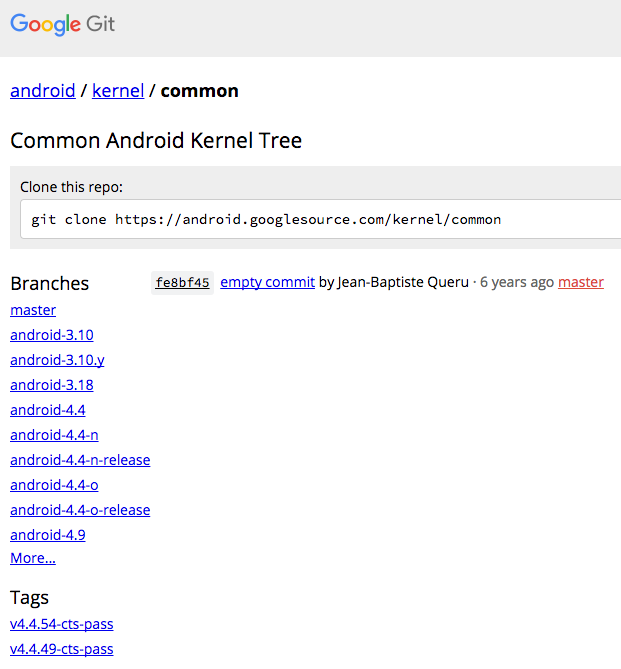
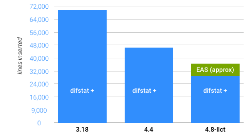
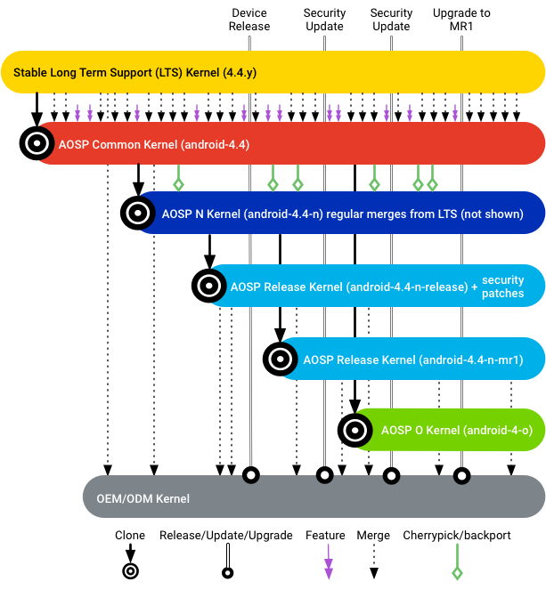

The AOSP common kernels are downstream of Long Term Supported (LTS) kernels and include patches of interest to the Android community that have not been merged into LTS. These patches can include:
cpufreq
governor).sdcardfs).
To view a list of Android common kernels, refer to https://android.googlesource.com/kernel/common/ (shown below).

Figure 1. List of Android common kernels.
When compared to LTS (4.4.40), the Android common kernel has 679 changes, 56172 insertions, and 3340 deletions (as of February 2017).

Figure 2. Android-specific code over time.
The largest features include:
All AOSP common kernels must provide the following:
In addition, regular testing must be performed on AOSP common kernels and branches must be tagged when passing.
To ensure downstream partners can get timely updates that include all LTS patches, android-X.Y gets regular merges from LTS and is validated via automated VTS, CTS, and build/boot tests.
To guarantee that new feature development does not interfere with merging from the AOSP common kernel (even for previous Android releases), android-X.Y-androidRel is cloned from android-X.Y prior to the initial dessert release, gets regular merges from LTS, and is tested against the associated Android release. For example, the android-4.4-n branch gets merges from the LTS 4.4.y branch.
To ensure downstream partners can easily identify security patches that are part of an ASB, android-X.Y-androidRel-type is cloned from android-X.Y-androidRel at the time of the Android release and gets only the patches listed in the bulletin.
After the patches associated with a bulletin are confirmed to be merged into a release branch, the branch is tagged with the ASB level. For example, the tag ASB-2017-10-05 indicates the release branch contains patches from the Android Security Bulletin for October 5th, 2017. Parent branches contain those security patches, so if the android-4.4-o-release branch is tagged with ASB-2017-10-01, android-4.4-o and android-4.4 are also up-to-date with that bulletin. Example:
Regular testing is performed on all on AOSP common kernels and test results are available to the public. Specifically:
kernelci is run and results are made available at
https://kernelci.org/job/android.
The branch hierarchy for the android-4.4 kernel uses the following structure:

Figure 3. Branch hierarchy for the android-4.4 kernel.
Android implementations should use the following kernel guidelines: